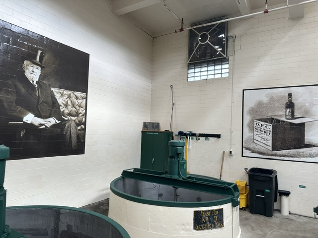
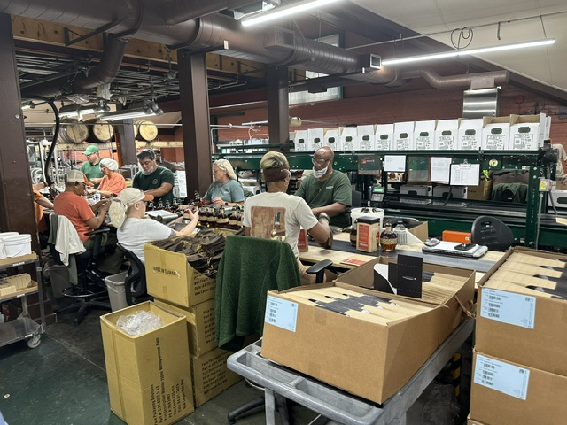

Let's be direct about why a lot of people visit Buffalo Trace: the tour is great, but the gift shop is the main event. It's one of the few places in Kentucky where you have a realistic shot at picking up allocated bottles — Blanton's, Eagle Rare, Weller — at retail price, bottles that would cost two or three times as much anywhere else if you can find them at all.
The key word is "realistic." Buffalo Trace gift shop inventory is not random and it's not just luck. There's a weekly rotation system, and once you understand it, you can walk in with a real plan instead of hoping for the best.
Standard bottles like Buffalo Trace bourbon, Weller Special Reserve, Traveller Whiskey, and Sazerac Rye are available daily. Allocated bottles — Blanton's, Weller Antique 107, Eagle Rare, E.H. Taylor Small Batch — rotate and vary. Buffalo Trace now posts each day's allocated availability on their website each morning, so you can check before you go. The gift shop does not hold bottles or take requests.
Photos from the Distillery


What's Always in Stock
The everyday lineup is more reliable than it's ever been. These bottles are consistently available and don't require any timing strategy:
Buffalo Trace Bourbon
Always AvailableThe flagship. Reliably stocked. Distillery-exclusive gift shop packaging options available if you want something that reads as a gift.
Weller Special Reserve
Always AvailableNearly impossible a few years ago. Now a confirmed daily offering — a big change. Don't sleep on it just because it's become more accessible.
Traveller Whiskey
Always AvailableListed as a daily offering alongside Buffalo Trace and Weller Special Reserve. A blended American whiskey collaboration with Chris Stapleton — worth trying if you're curious.
Sazerac Rye
Always AvailableA daily offering that often flies under the radar. One of the better straight ryes on the market and easy to find here at retail.
Buffalo Trace Bourbon Cream
Availability VariesA distillery exclusive you won't find at your local store. Listed as an "additional offering" — availability may change daily, per Buffalo Trace's own site.
Buffalo Trace White Dog
Availability VariesUnaged mash spirit — a distillery exclusive. Interesting to taste against the finished product. Check availability when you arrive.
Beyond bottles, the gift shop carries branded glassware, apparel, barware, and gift sets. The quality is genuinely good — Buffalo Trace branded Glencairn glasses are a popular pickup if you're outfitting a home bar.
The Weekly Allocated Rotation
This is where most first-timers get tripped up by bad information they've read online. Buffalo Trace rotates a selection of allocated bottles on a weekly basis. The rotation cycles through these expressions:
Blanton's Single Barrel
Weekly RotationThe one everyone wants. Still in the rotation, but not every week. Ask staff when you arrive — they'll tell you straight whether it's a Blanton's week.
Weller Antique 107
Weekly RotationCycles in and out. When it's available it moves fast. One of the better values in the Weller lineup when you find it.
Eagle Rare 10yr
Weekly RotationNo longer the everyday bottle it used to be — now part of the rotation. Worth grabbing when it's in stock.
E.H. Taylor Small Batch
Weekly RotationUnderrated relative to the others. Excellent bottle, and typically slightly more available than Blanton's or Eagle Rare on any given week.
The weekly rotation means there's a real chance your target bottle isn't available when you visit. Go for the experience first, the bottles second — and you won't leave disappointed. The tour, the history, and the grounds are worth the trip regardless of what's on the shelf that week.
On rare occasions, special allocated bottles beyond the standard rotation show up — Weller 12, Weller Full Proof, George T. Stagg in the fall. These aren't something you can plan for, but it's worth knowing they're possible. When they appear, they go fast.
Purchase Limits
Buffalo Trace enforces purchase limits on allocated bottles to keep inventory fair. Limits change periodically, so don't count on specific numbers from what you've read elsewhere — confirm with staff when you arrive. As of recent visits, limits on high-demand allocated items are typically one bottle per person.
Standard bottles like Buffalo Trace bourbon and Weller Special Reserve typically have more generous limits. If you're shopping for a group, each adult in your party can make their own purchase — coordinate accordingly.
How to Time Your Visit
| When You Visit | Crowd Level | Selection | Verdict |
|---|---|---|---|
| Weekday morning | Light | Best — full rotation available | Ideal if your schedule allows |
| Saturday at open | Moderate | Good if you're early | Arrive by 9am, shop right after your tour |
| Saturday afternoon | Peak | Allocated bottles often sold out by midday | Fine for the experience; lower bottle expectations |
| Sunday | Moderate | Similar to Saturday; check hours in advance | Confirm gift shop hours before planning around it |
| Monday or Tuesday | Light | Fresh rotation stock before weekend crowd hits | Underrated mid-week strategy for bottle hunters |
Buffalo Trace now posts that day's allocated bottle availability on their website each morning at buffalotracedistillery.com/visit-us/product-availability. This is a relatively new feature and a genuine game-changer for bottle hunters — you can confirm whether Blanton's or Eagle Rare is available before you even leave your hotel. Check it first thing in the morning on the day of your visit.
Walk-up gift shop access is free, no reservation required, and the shop is open seven days a week. If you're tight on time, you can skip the tour and go straight to the gift shop. That said, the free tour at Buffalo Trace is the best complimentary distillery tour in Kentucky — don't skip it if you have the time.
Free Tastings at the Gift Shop
Here's something a lot of visitors miss: complimentary guided tastings are available daily at the gift shop, no reservation required. You don't have to join a tour to taste bourbon at Buffalo Trace.
The gift shop tasting pours typically cover Buffalo Trace's core expressions. It's a low-key, no-pressure format — staff walk you through the lineup, answer questions, and let you decide what to bring home. If you've never done a proper side-by-side of the core expressions, this is a good way to taste before you buy.
What's Worth Buying (And What to Skip)
Worth It
- Any allocated bottle from the weekly rotation — retail price on Blanton's or Eagle Rare is always the right call
- Weller Special Reserve — buy it here at retail rather than hunting for it elsewhere
- Buffalo Trace White Dog — distillery exclusive, genuinely interesting to try and compare against the finished product
- Glencairn glasses — good quality, reasonably priced, practical souvenir
- Apparel — better quality than most distillery merch and well-priced
Skip
- Cocktail mixers and syrups — you don't need a specialty mixer when you have good bourbon
- Mini or single-serve bottles — fine as novelty gifts, but poor value per ounce
- Elaborate gift sets — the branded accessories aren't worth the markup; buy the bottle and a glass separately
How to Structure Your Visit Around the Gift Shop
If bottle hunting is a priority, here's the sequence that actually works:
- Book the earliest available tour. Tours are free and fill up fast on weekends. The 9am slot books by 8:55 — not an exaggeration. Reservations open 8 weeks in advance at buffalotracedistillery.com.
- Check with gift shop staff when you arrive about that week's allocated rotation — before your tour starts. You'll have 75–90 minutes during the tour to decide your budget.
- Do the tour. It's the best free distillery tour in Kentucky. Don't rush past it to get to the shop — the gift shop won't be open before your tour starts anyway.
- Shop immediately after your tour ends. You'll have better selection than visitors arriving later in the day.
- Pair with Castle & Key or Glenns Creek for a complete Frankfort day — both are within 20 minutes and make excellent companion stops.
Buffalo Trace pairs naturally with Castle & Key (stunning grounds, excellent gin and bourbon) and Glenns Creek Distilling (small-batch, personal experience). Use our interactive trip builder to cluster these three into a single day with driving times and pairing tips built in.
The Honest Verdict
The Buffalo Trace gift shop is one of the better distillery bottle shops in Kentucky — not because of miracle scores, but because the baseline experience is so strong. Even if your target bottle isn't in the rotation that week, you're buying excellent bourbon at retail price in a 200-year-old distillery on a National Historic Landmark campus. That's a good day regardless of what's on the shelf.
Go with realistic expectations: you're not guaranteed Blanton's, the shop doesn't hold bottles or take phone requests, and popular items sell out early on busy weekends. Show up on a weekday morning, ask the staff what's rotating, stay flexible — and you'll almost certainly walk out with something worth bringing home.
For a full breakdown of tour types, booking tips, and what to expect on the distillery grounds, see our complete Buffalo Trace distillery profile.